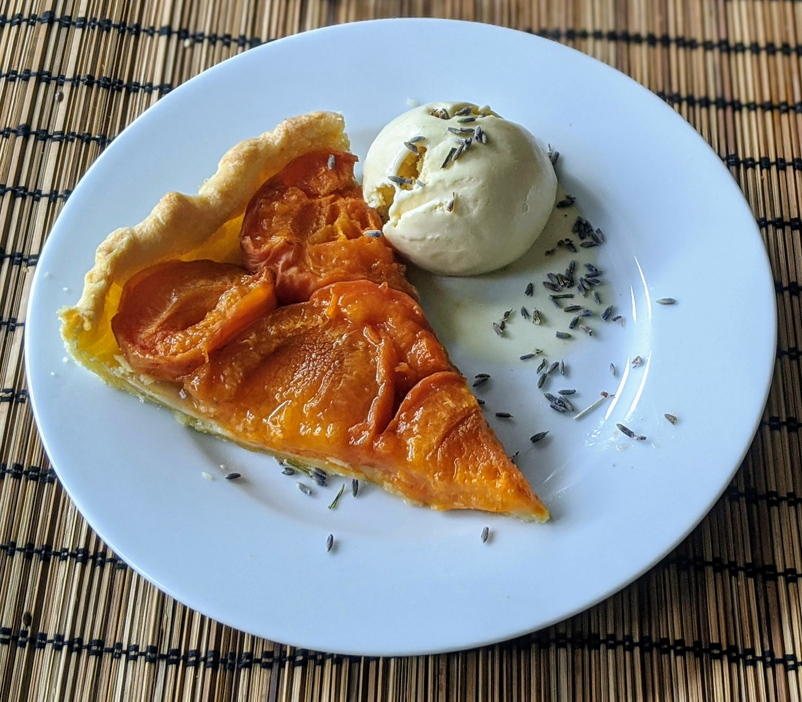

Tarte aux abricots

Ici avec une boule de [glace miel-lavande](GlaceMielLavande.html)
Pour une tarte (6-8 parts) :
- Une pâte brisée, ou feuilletée
- 25g de beurre
- Deux bonnes cuillères à soupe de sucre brun
- Une bonne douzaine d'abricots
- Faire préchauffer un four à 180°C.
- Disposer la pâte sur un moule. La piquer à la fourchette un peu partout, puis la faire chauffer à blanc avec des billes de
cuisson ou des morceaux de papier alu sur les côtés (pour éviter que les bords ne s'affaissent) pendant une quinzaine de minutes, jusqu'à ce que le fond commence légèrement à dorer.
- Pendant ce temps, laver et sécher les abricots et les couper en deux. Faire fondre le beurre.
- Badigeonner le fond de pâte de beurre, saupoudrer d'une cuillère à soupe de sucre brun.
- Disposer les moitiés d'abricots le côté bombé sur le dessous. C'est bien s'il reste quelques abricots qu'on peut couper en bouts plus petits, pour glisser dans les trous.
- Saupoudrer d'une autre cuillère à soupe de sucre brun. Enfourner environ une demi-heure, jusqu'à ce que les bords de la pâte aient l'air brunis. Déguster tiède.
Retour à la liste des recettes